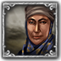
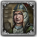

顾问（英文：Advisor）是指在特定领域有深厚造诣并为统治者献计献策的大臣。顾问能在发动战争，促进科技进步和管理经济上为你提供助力。
顾问能在国家界面的宫廷面板中管理。在欧陆风云4中每类君主点数都包括7种顾问，共计21种。每种顾问可以提供一种修正加成。例如，商人类型的顾问可以提升10%的贸易效率。
顾问还可以进一步按照其技能等级划分。技能等级从 +1 到 +5， 其中+3等级之上的顾问需要花费金币手动提高顾问等级（并且需要顾问的文化在国家所认同的文化之中，否则无法手动提高技能等级）。每个级别提供额外的君主点数。（例如一个级别2的外交顾问每个月提供 +2  ）。雇用和维持一个顾问的花费随着顾问的技能等级额外增加。顾问的技能等级只影响他的花费和额外提供的君主点数，技能等级并不影响顾问种类所带来的修正加成。（例如一个等级1和一个等级3的
）。雇用和维持一个顾问的花费随着顾问的技能等级额外增加。顾问的技能等级只影响他的花费和额外提供的君主点数，技能等级并不影响顾问种类所带来的修正加成。（例如一个等级1和一个等级3的  哲学家产出的
哲学家产出的  威望是相等的）。
威望是相等的）。
顾问也是会过世的，顾问去世后需要重新替换。
顾问池
一个国家只能同时拥有各一名分属每种点数类型的顾问；但是有多种方式可以拓宽可供选择的顾问池。在1444年开局时，每个国家都有每个点数类型最少3人的顾问池。每月总收入低于  50金币的国家将不会有3级顾问可选（除非是事件产生的）。每个国家在开局时都会有至少一个2级顾问可选。有部分国家在开局阶段自带半价顾问，如法国，奥斯曼等。
50金币的国家将不会有3级顾问可选（除非是事件产生的）。每个国家在开局时都会有至少一个2级顾问可选。有部分国家在开局阶段自带半价顾问，如法国，奥斯曼等。
获取新顾问
新顾问只会通过事件或是在顾问池有空缺的时候到来，此空缺的产生可以是由于顾问池的拓宽，也可以是由于之前的可选顾问的去世。在DLC  常识激活的时候，玩家也可以花费与雇用顾问时等额的金币来将一个顾问逐出宫廷。新的顾问会在每个月开始时出现。
常识激活的时候，玩家也可以花费与雇用顾问时等额的金币来将一个顾问逐出宫廷。新的顾问会在每个月开始时出现。
可以设置通知来提醒玩家新顾问的到来。顾问在超过40岁之后就有可能死去，而新顾问的年龄总是不低于30岁。较低的替代率意味着没有必要苦等理想种类的顾问。解锁理念组来获得额外的顾问池空间，就能增加获得期望顾问的可能性。
许多事件都可以提供一个新的顾问，这些顾问往往带有-50%的花费减成。许多国家都拥有自己的专属事件，让本国的著名历史人物成为游戏中可用的半价顾问，而且往往还伴随着威望、政府改革进度等的奖励。
女性顾问
新的顾问有2%的几率为女性。这个几率能被下列修正增加：
| 传统 | 理念 | 奖励/野心 | 政策 | |
|---|---|---|---|---|
| +50% | — |
|
— | — |
| +25% | — | — | — |
|
| +20% | — |
|
— | — |
其他方式依旧可以获得女性顾问几率修正，如下表所列的永久修正：
| Condition | |
|---|---|
| +33% | 作为革命共和国，启用政府改革 平等选举 |
| +25% | 作为革命不列颠，通过事件 穿衬裙的士兵 |
| +20% | 作为勃艮第，通过事件 [Root.Monarch.GetTitle][Root.Monarch.GetName]的法律 |
| +20% | 作为伊斯兰神权国，通过事件 妇女的教育 |
| +10% | 主流文化或已接纳文化为萨波特克，通过事件 宫廷中的第三性 |
 女性顾问几率也能增加女性继承人或女性将领的产生概率。
女性顾问几率也能增加女性继承人或女性将领的产生概率。
- 参见：女性史事件
DLC 女性史/历史上的女性（Women in History） 中增加了大量的历史事件，让许多国家有机会任用历史上的知名女性人物为顾问，甚至让她们登上王位。该DLC目前已是游戏本体的一部分。
 拓宽顾问池
拓宽顾问池
顾问池受下列影响增加：
| 状态 | |
|---|---|
| +2 | 是教廷监护。 |
| +1 | 是幸运国（AI限定）。 |
| +1 | 是神圣罗马帝国皇帝。 |
| +1 | 信仰 |
| +1 | 信仰 |
| +1 | 信仰 |
| +1 | 信仰 |
| +1 | |
| +1 | “非常简单”难度下由玩家控制的国家。 |
理念和政策：
| 传统 | 理念 | 奖励/野心 | 政策 | |
|---|---|---|---|---|
| +1 |
|
|
— | — |
决议和事件：
| 事件修正 | 触发条件 | 持续时间 | |
|---|---|---|---|
| +1 | 寺子屋 | 日本事件：“寺子屋”
|
直到君主更替。 |
| +1 | 忠言良谏 | 行政理念组事件： “忠言良谏” | 10年。 |
| +3 | 廷巴克图的黄金时代 | 桑海事件： “廷巴克图的黄金时代” | 直到君主更替。 |
| +1 | 广招贤士 | 巴赫曼尼事件： “吸引合适的人”
|
10年。 |
| +1 | 齐米阶层的官员 | 齐米阶层的事件： “选自$ESTATE_DHIMMI$的官员”
|
15年。 |
| +1 | 精致的宫廷生活 | 贵族阶层事件： “晨间朝见”
|
25年。 |
花费
雇用一个顾问的  花费由他的技能等级、当前年份和其他修正（如果有的话）来决定。雇用时的花费要受到顾问年龄的影响，每月的花费则不受影响。史实顾问在雇用时会有额外折扣。
花费由他的技能等级、当前年份和其他修正（如果有的话）来决定。雇用时的花费要受到顾问年龄的影响，每月的花费则不受影响。史实顾问在雇用时会有额外折扣。
鼠标移到经济面板中“花费”一栏里的“顾问”上面可以看到现在激活的修正。这些数值精确到小数点后数位（如图所示）。
月度花费
维持一个顾问的月度花费通过一个基础值来计算，这个基础值等于他的技能等级的平方（1，4，9）。这个基础值随着时间每年增加 0.5%。到了1644年的时候（过了200年），基础值就从原来的1、4、9加倍到了2、8、18。到游戏结束的时候（1821年，377年后），基础值将是初始值的2.88倍（1+188.5%）。所有修正的计算都是基于基础值计算。
[math]\displaystyle{ \text{ 月度花费 }=\text{ 技能等级 }^2 \cdot(\text{ 当前年份 }-1444) \cdot 0.5 \cdot \text{ 各种修正 } }[/math]
雇佣花费
一次性的雇佣花费只是简单地等于月度花费的倍数。顾问的技能等级的影响已经体现在月度花费上了，在计算雇佣花费时不会再次计算。
由于雇佣花费等于月度花费的倍数，所以也随着年份增加。
雇佣花费的倍数只跟顾问的年龄有关，从30岁（可能的最小顾问年龄）时的16倍到60岁时的10倍（顾问池中极少会出现年龄超过50的顾问）。这个倍数的变化完全是线性的，每大一岁减少0.2（或者说每5岁减小1倍）。顾问的年龄只会取整，不存在不显示的“50岁半”等。
[math]\displaystyle{ \text{雇佣花费} = \left( 16 - \frac{\text{年龄} - 30}{5} \right) \cdot \text{月度花费} }[/math]
更多关于年龄的信息，请参考下面的寿命一节。
举例
1544年，国家通胀10%，一个50岁的2级顾问（基础月度花费4金币）：
[math]\displaystyle{ \text{基础花费} = 4 \cdot (1+0.005\cdot100) = 6.00 \text{每月} }[/math]
[math]\displaystyle{ \text{每月总花费} = 6\cdot(1 + 0.10) = 6.60 \text{每月} }[/math]
[math]\displaystyle{ \text{雇用花费} = (16 - 4) \cdot 6.60 = 79.2 }[/math]
顾问花费的影响因素
请注意，这些修正会在基础花费基于年份的加成之后进行计算。
- 通货膨胀： +不定%
- 破产： +100%
- 低贤能值： 最多达 +25%，于0贤能值时
- 儒教和谐上座部佛教后： −5%
- 茶叶贸易： −10%
- 长生天 以什叶派、伊巴德派、犹太教，或是改革宗作为次要信仰：−10%
- 上座部佛教： −10%
- 拜物教 Haymanot崇拜： −10%
- 统治者的特质有 礼贤下士： −20%
- 成为教廷监护： −20%
- 高贤能值：最高达 −25%，于100贤能值时
- 土著建筑-仪式火坑： −50%
- 马穆鲁克政府与统治者文化相同的顾问：−25%
- 帕特农神庙: −10%
 /−20%
/−20% 省份属于原始宗教组，且与拥有者国教相同；或省份文化为希腊，且省份拥有者视其为主流文化或已接受文化
省份属于原始宗教组，且与拥有者国教相同；或省份文化为希腊，且省份拥有者视其为主流文化或已接受文化 - 胡夫金字塔: −5%/−10%
 /−20% 省份属于原始宗教组，且与拥有者国教相同；或省份文化为埃及，且省份拥有者视其为主流文化或已接受文化
/−20% 省份属于原始宗教组，且与拥有者国教相同；或省份文化为埃及，且省份拥有者视其为主流文化或已接受文化 - 特殊顾问折扣： −50%
- 各种事件： −不定%
下表列出了提供顾问花费减成的理念和政策：
| 传统 | 理念 | 奖励/野心 | 政策 | |
|---|---|---|---|---|
| -25% | — | — |
|
— |
| -15% |
|
|
|
— |
| -10% |
|
|
|
|
一些减成仅当该顾问与国家君主的文化相同时才可以生效。下表列出了提供与君主同文化的顾问花费减成的理念和政策：
| 传统 | 理念 | 奖励/野心 | 政策 | |
|---|---|---|---|---|
| -25% | — |
|
— | — |
| -20% | — |
|
— | — |
| -15% | — |
|
— | — |
提升顾问等级
|
|
只适用于DLC文明的摇篮激活时。 |
可以花费金钱来提升顾问的等级，最高至5级。提升的花费为顾问的60倍月薪（亦即5年年薪），此外，被升级顾问的文化必须是该国的主流文化或可接受文化。
由于顾问的薪水根据其等级呈指数上升（例如，5级顾问具有5*5=25倍的基础花费），建议在升级顾问应当充分考虑国库的资金是否充裕。此外，还需要考虑到顾问的年龄——如果他们过早去世，在升级上的投资就血本无归了。
顾问类型
下列表格中，列出了每一种顾问所带来的增益以及可能所需要的决议。
雇佣一个3级顾问可能会触发一些顾问事件。
当DLC女性史激活时，所有顾问在随机产生时均可能为女性。这一概率为2%。[1] 一些事件发生时也会在顾问候选池中加入女性顾问。女性顾问的头像边框是银色。从1.29.3版本起，女性史已成为基础游戏本体的一部分。
 行政顾问
行政顾问
行政顾问可被认为是对国内政策有帮助的一类顾问。他们的主要职责是改善一国的内政能力，如：改革税收系统和促进提高文化资助。
| 效果 | 触发条件 |
|---|---|
|
省份所有者：
|
省份所有者：
| |
省份所有者：
| |
省份所有者：
|
| 顾问 | 效果 | 激活的决议 | |
|---|---|---|---|
| |
|||
| |
|||
| |
|||
| |
|||
| |
|||
| |
|||
| |
|||
 外交顾问
外交顾问
外交顾问主要负责与海军和外交有关的事务。他们的工作主要是促进海军的发展以及与其他国家进行外交，如：提高一个国家的贸易竞争力以及改善外交关系
| 顾问 | 效果 | 激活的决议 | 需求 |
|---|---|---|---|
| |
省份拥有者： | ||
| |
|||
| |
省份须拥有一个港口。 | ||
| |
省份拥有者： | ||
| |
|||
| |
|||
| |
 军事顾问
军事顾问
军事顾问唯一的功能就是增强国家的军事力量，无论是进攻方面还是防守方面。因此，其职能主要体现在增强一国军队的实力或者是提高抵御外来入侵的能力。例如，对后勤补给进行改革 和提高要塞防御能力 。
| 顾问 | 效果 | 描述 |
|---|---|---|
| |
||
| |
||
| |
||
| |
||
| |
||
| |
||
| |
寿命与雇佣花费
当顾问被雇佣之后，在顾问的提示信息中将会显示其死亡风险的百分数，这一概率由顾问的年龄所决定。因为雇佣所需要的花费随年龄的增长而减少，同时，顾问有一份生命表。所以根据上述两个条件，可以计算出当雇佣顾问的最优年龄。
顾问的年龄超过40岁后，当年的死亡概率将以每年2/3个百分点（约为0.67%）的速度累加。换句话说，也就是每三年增加2个百分点。当顾问年龄达到55岁时，当年的死亡概率将会是10%。而当年龄达到100岁时，当年死亡概率将达到40%。这一百分数将以向下取整的方式，显示在顾问的提示信息中，但在计算中会以实际值计算。也就是说，当顾问41岁时，其当年死亡概率是0.67%，而提示信息中将显示为0%。
[math]\displaystyle{ \text{当年死亡率}(\%) = \left( \text{年龄} - 40 \right) \cdot \frac 23 }[/math]
这一概率的累加效果十分可观（如左图所示）。概率上的中位年龄为53.7，也就是顾问只有50%的几率能活到53.7岁。而这一数值提高的65岁时，几率仅为十分之一。只有百分之一的概率顾问能达到75岁。上述概率都是根据总体死亡率曲线得出的。如果一个顾问年龄已经到了50岁，那对这个顾问而言，其死亡率曲线也将与左图中的曲线不同。（因为其活到50岁的概率已经为100%了）。
根据雇佣花费与寿命的关系，是可以计算出雇佣多大年龄的顾问是最划算的（如右图所示）。当顾问年龄处于30至40之间时，答案很简单。因为这一年龄区间中，雇佣花费乘数虽然在变化，但顾问死亡概率是0%。而根据上文提到的，中位寿命期望值为53.7岁。因此，如果在一名顾问30岁的时候雇佣了他，其期望工作年限约为24年（从顾问30岁到53.7岁）。此时，雇佣花费乘数为16。很容易求得，每一点雇佣花费乘数可以提供1.5年的工作时间（即24除以16）。如果在40岁时雇佣顾问（雇佣乘数为14），那他的期望寿命还有14年。换句话说，每一点雇佣花费乘数可以带来1年的工作时间（即14除以14）。很明显的，30岁的顾问是更好的选择。
当年龄超过40岁后，死亡率曲线就将发生改变。其中位寿命期望值（也就是死亡年龄预期值）将随着受雇年龄的增加而增加。（一名55岁的顾问，很明显，其期望寿命不能再是53.7岁了。）在右图中，工作年限曲线在受雇年龄为30-40时呈现为一条直线（因为这一年龄区间顾问不会死亡）。而当受雇年龄超过40后，呈一条曲线。由于工作年限期望值的降低速度要快于雇佣花费乘数，也就是说，雇佣越年轻的顾问越值。当顾问的受雇年龄分别达到50岁和60岁时，每一点雇佣花费乘数可以提供的工作年限，将分别仅为0.59年和0.42年。
尽管30岁是雇佣顾问的最优年龄，但考虑到雇佣乘数变动区间仅仅是从10到16，也就是说，最大差别也仅有半年的顾问工资。这对玩家的收入可能不会有很大的影响，除非玩家的收入真的很低。
顾问画像
以下是所有可用顾问的画像。
顾问头像同样取决于其所属文化。
|
|
| 类型 | 顾问 | 通用男性 | 通用女性 | 俄罗斯男性 | 俄罗斯女性 | 哥萨克男性 | 哥萨克女性 | 非洲男性 | 非洲女性 | 穆斯林男性 | 穆斯林女性 | 波斯男性 | 波斯女性 | 亚洲男性 | 亚洲女性 | 北美洲顾问 | 中美洲顾问 | 南美洲男性 | 南美洲女性 |
|---|---|---|---|---|---|---|---|---|---|---|---|---|---|---|---|---|---|---|---|
| 陆军组织者 |  |
||||||||||||||||||
| 陆军改革者 | |||||||||||||||||||
| 艺术家 | |||||||||||||||||||
| 殖民总督 | |||||||||||||||||||
| 教官 |  |
 |
|||||||||||||||||
| 外交家 | |||||||||||||||||||
| 要塞工程师 | |||||||||||||||||||
| 陆军队长 |  | ||||||||||||||||||
| 审讯官 | |||||||||||||||||||
| 铸币专家 | |||||||||||||||||||
| 征兵官员 |  | ||||||||||||||||||
| 自然科学家 | |||||||||||||||||||
| 海军改革者 | |||||||||||||||||||
| 航海家 | |||||||||||||||||||
| 哲学家 | |||||||||||||||||||
| 军需官 |  |
||||||||||||||||||
| 间谍首脑 | |||||||||||||||||||
| 政治家 | |||||||||||||||||||
| 神学家 | |||||||||||||||||||
| 商人 | |||||||||||||||||||
| 财政专家 |
参考资料
- ↑ From /Europa Universalis IV/common/defines.lua: FEMALE_ADVISOR_CHANCE = 2, -- If Women in History is enabled, chance of an advisor spawning as female